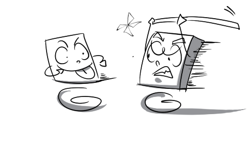
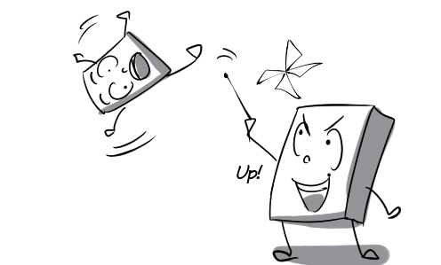

1.
allegation: His classmates made allegations of dishonest against him.
(sự cáo buộc) n
2.
analogous: His hairstyle is analogous to a lion's mane.
(tương tự, giống nhau) a
3.
antagonize: Peter antagonized his classmates with his rude behavior.
(gây thù địch) v
4.
antics: The audience were entertained by the comedian's antics.
(trò cười) n
5.
apparatus: Washing machine is a mechanical apparatus for washing clothes and linens.
(thiết bị, máy móc) n
6.
artery: A blocked coronary artery can result in a heart attack.
(động mạch) n
7.
artificial: My grandfather has to use artificial teeth to chew and bite food properly.
(nhân tạo) a
8.
assail: Danny was assailed with insults and abuse by his brother.
(tấn công) v

9.
blob: The boy tried to catch a falling blob of dew.
(giọt) n
10.
botch: The chemist completely botched up the experiment.
(làm hỏng) v
11.
built-up: Ho Chi Minh City is the most built-up city in Vietnam.
(có nhà cửa san sát) a
12.
burgeon: His jewelry business has been burgeoning thanks to his great sales skills.
(phát triển nhanh) v
13.
butcher: Mr. Bing can butcher a pig expertly.
(giết, mổ) v
14.
cavity: This huge cavity was caused by a meteorite.
(lỗ hổng) n
15.
censorship: The censorship board decided to ban this movie because it is too violent.
(sự kiểm duyệt) n
16.
circuit: The earth takes about 365 days to make a circuit of the sun.
(chu vi, đường vòng quanh) n
17.
clearing: We decided to camp overnight in a clearing in the woods.
(khoảng rừng trống) n
18.
cluster: Peter is being chased by a cluster of bees.
(đám, bó, cụm, đàn) n
19.
coherent: The professor gave a coherent explanation for the difficult mathematic problem.
(mạch lạc, chặt chẽ) a
20.
cold-shoulder: I tried to be nice to him but he cold-shouldered me.
(lạnh nhạt) v

21.
commentary: The reporter is giving a running commentary on the World Cup final.
(bài tường thuật) n

22.
commercial: Commercial flights from Earth to Mars may be available within 30-years.
((thuộc) thương mại) n
23.
compatible: This graphics editing program is compatible with the operating system.
(tương thích) a
24.
competence: Hoang's competence as an illustrator is unquestionable.
(năng lực) n
25.
complication: It's difficult for us to study Arabic because its script exhibit complications that are not found in the Latin script.
(sự phức tạp) n
26.
composed: This team was composed of top competitors in the region.
(bao gồm) a
27.
concord: Vietnam is living in concord with neighboring countries.
(sự hòa hợp) n
28.
confound: The baby confounded everyone with an amazing electric guitar performance.
(làm bối rối, ngạc nhiên) v
29.
conical: Vietnam's traditional hat has a conical shape.
(hình nón) a
30.
conjure up: For some foreigners, the word Vietnam may conjure up images of pretty ao dais.
(gợi lên) v

31.
con-man: The con-man pretends to be the CEO's assistant to commit fraud.
(kẻ lừa đảo) n
32.
containment: Firefighters are fighting to achieve containment of the wildfire.
(sự ngăn chặn, kiểm soát) n
33.
conspire: Peter conspired with his colleague to poison the boss.
(âm mưu) v

34.
contract: The magical liquid cause the prince to contract to the size of a frog.
(thu nhỏ lại) v
35.
currency: The currency of Vietnam is Vietnamese dong (VND).
(đơn vị tiền tệ) n
36.
curved: I like to walk along the curved path around the lake every evening.
(cong) a
37.
delegate: The delegates from different countries are getting acquainted with each other.
(đại biểu) n
38.
destabilize: David is trying to destabilize our business relationship with that company.
(làm mất ổn định) v
39.
diagnose: The doctor is checking Tom's symptoms to diagnose his illness.
(chẩn đoán) a
40.
dismantle: The mechanic dismantled the engine in order to fix it.
(tháo rời) v

41.
dispense: We are dispensing presents to needy children.
(phân phát) v
42.
disperse: The crowd dispersed when a bad singer started singing.
(giải tán) v
43.
enterprise: My enterprise was established on October 10th 2010.
(công ty, hãng) n
44.
enthrall: The children were enthralled by the amazing magic performance.
(mê hoặc) v
45.
envision: It is envisioned that the share price will increase soon.
(mường tượng, dự tính) v
46.
equation: The teacher asked me to balance the equation.
(phương trình) n
47.
eradicate: Scientists are trying their best to eradicate AIDS from the world.
(tiêu diệt, xóa bỏ) v
48.
erect: The masons are erecting a scaffold tower.
(dựng nên, xây dựng) v
49.
eruption: A great volcanic eruption happened in my country 30 years ago.
(sự phun trào) n
50.
imbibe: He imbibed a set of mystical beliefs from the years he spent in Tibet.
(hấp thụ, tiêm nhiễm) v
51.
inhumane: How inhumane he is! How can he laugh at a man hit by a car?
(vô nhân tính) a
52.
predator: Tiger is one of the most powerful predators in the animal kingdom.
(thú săn mồi) n
53.
recommendation: The doctor gave me some recommendations to help me improve my health.
(lời khuyên) n
54.
respectively: The ordinal numbers of Ben, Chad and Dave were one, two and three respectively.
(lần lượt) adv
55.
retail: The retail price of this new cooker is 30 dollars.
(bán lẻ) n
56.
rigorous: The chef is rigorous in his cooking.
(chính xác) a

57.
rubbish: You should put the rubbish in the public bin.
(rác, vật bỏ đi) n
58.
rule out: The proposed business plan was ruled out as too risky.
(loại trừ, bác bỏ) v

59.
rural: My grandfather is living in a remote rural area.
((thuộc) nông thôn) a
60.
standardize: The size of the screw were standardized to fit any model of car we make.
(tiêu chuẩn hóa) v
61.
stroke: My father had a stroke when he was taking a walk.
(cơn đột quỵ) n

62.
subside: Phew! I'm so glad the pain in my foot subsided.
(giảm bớt, lắng đi) v
63.
subtle: There is a subtle difference between these two chickens.
(khó thấy, phảng phất) a
64.
suicidal: I have suicidal tendencies after my girlfriend broke up with me.
(muốn tự tử) a
65.
summon: The captain summoned all the soldiers to make an announcement.
(triệu tập) v
66.
supernatural: If I could choose a supernatural power, I would choose the ability to fly.
(siêu nhiên) a
67.
surpass: With many improvements, the new MacBook has surpassed all other laptops.
(vượt trội hơn) v
68.
survey: Daisy surveyed herself in the mirror before going out.
(quan sát) v
69.
time-consuming: Building a pyramid is an extremely time-consuming process.
(tốn nhiều thời gian) a
70.
toxicity: The man died immediately after consuming the drink because it had a high level of toxicity.
(độc tố) n

71.
traction: In rural areas, they use horses for traction.
(sự kéo, sức kéo) n
72.
trance: David fell into a deep trance after falling down the stairs.
(sự hôn mê) n
73.
transform: The rural area was transformed into a busy city thanks to foreign investments.
(thay đổi, biến đổi) v
74.
trek: During the expedition, I trekked six to eight hours a day.
(đi bộ vất vả) v
75.
trendy: This singer always wears the trendiest heels when she goes out.
(hợp thời trang) a
76.
tribe: There are some tribes living in remote areas of this rainforest.
(bộ lạc) n
77.
trounce: Vietnam trounced Thailand 6–0 in the final.
(thắng đậm) v
78.
twilight: The countryside landscape looks really melancholy at twilight.
(chạng vạng) n
79.
undercut: The street vendor undercuts his rivals to attract more customers.
(bán rẻ hơn (đối thủ)) v
80.
undulating: The beautiful undulating hills of Wales attract many tourists each year.
(gợn sóng, nhấp nhô) a
81.
uphold: Although living abroad, my family still upholds beautiful traditions of Vietnam.
(duy trì, bảo vệ) v
82.
upturned: There is an upturned car lying abandoned on the street.
(lộn ngược) a
83.
utilize: Many Vietnamese people still utilize bamboo as a building material.
(sử dụng) v

84.
veterinarian: The veterinarian examined my dog very carefully.
(bác sĩ thú y) n
85.
verdant: The region's verdant countryside has been preserved perfectly.
(xanh tươi) a
86.
vertical: The athlete performs a vertical high dive for 10 meters.
(thẳng đứng) a
87.
vibrant: My grandfather is such a vibrant man in spite of his old age.
(sôi nổi, đầy sức sống) a
88.
virtual: My university has built the virtual library. Students can read books without going to the campus.
(ảo) a
89.
volatile: Nowadays, food and fuel prices are very volatile.
(hay thay đổi) a
90.
volume: Harry Potter is a seven-volume novel written by the British author J. K. Rowling.
(quyển, tập) n
91.
voyage: Daniel went on a voyage across the Pacific Ocean.
(chuyến đi xa (bằng tàu)) n
92.
warily: He is checking the large bill warily.
(thận trọng, cảnh giác) adv
93.
webcast: I am watching a live webcast on my computer.
(chương trình phát sóng trên mạng) n
94.
wholesale: The wholesale price of this product is cheaper than its retail price.
(bán sỉ) n
95.
wield: The director wields enormous influence within the company.
(sử dụng quyền lực) v
96.
wipe out: The whole house was wiped out by the earthquake.
(phá hủy hoàn toàn ) v

97.
wizardry: Harry used wizardry to lift the man up in the air.
(ma thuật) n

98.
wordy: The lecturer is delivering a wordy and repetitive speech.
(dài dòng) a
99.
woe: The beggar told me a real tale of woe about how he had lost everything.
(nỗi khổ) n
100.
wretched: He lives a wretched life after losing both his job and his house.
(khốn khổ, bất hạnh) adj